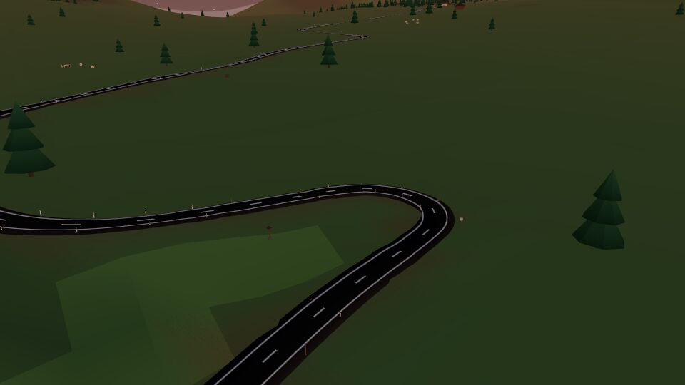
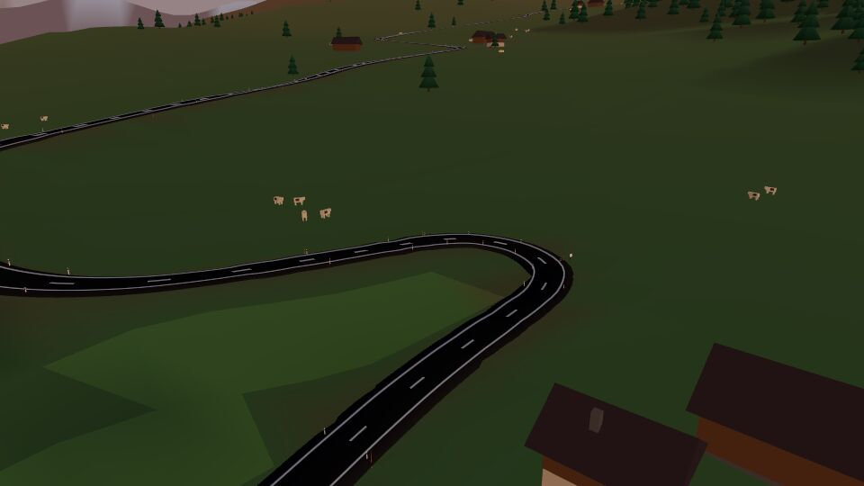
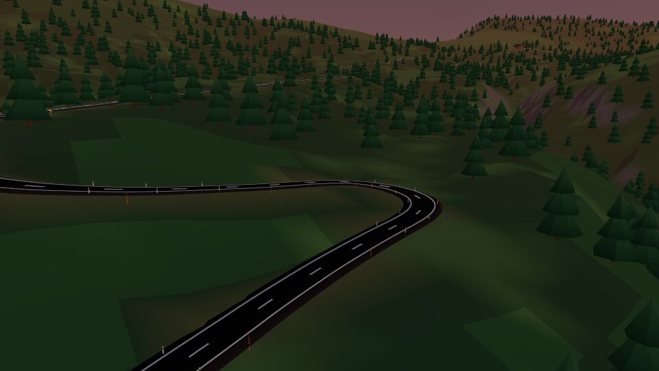
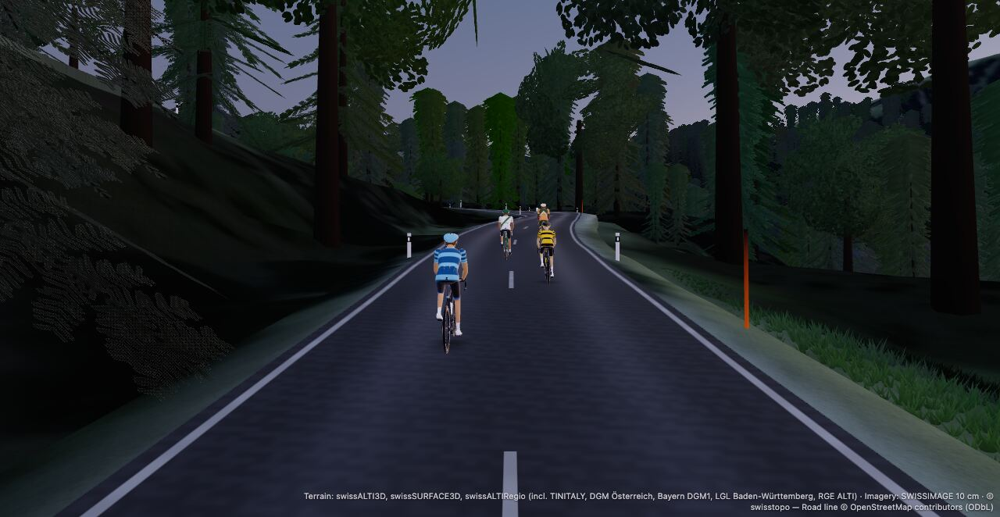
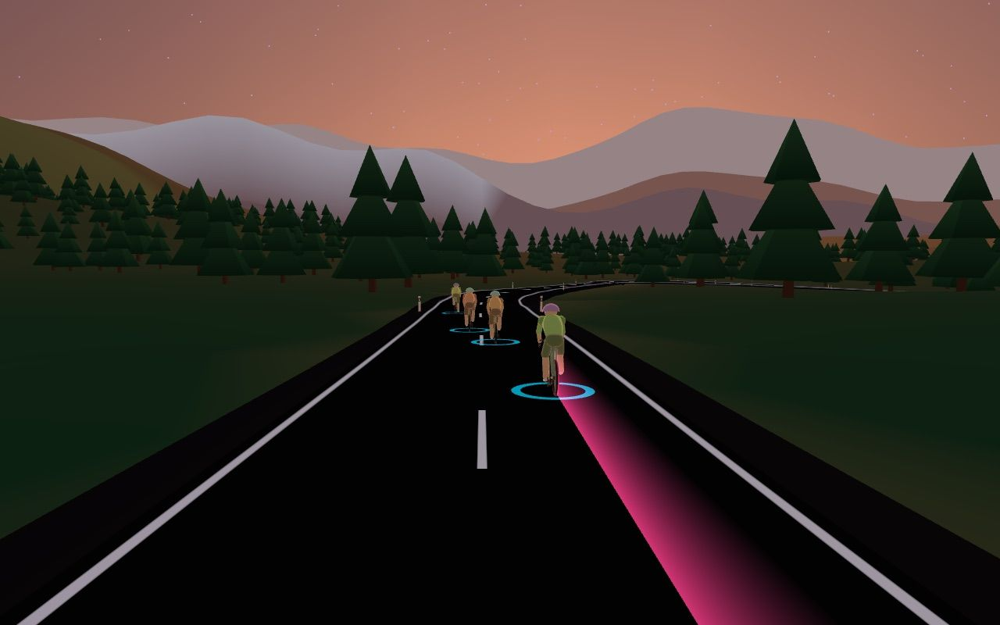
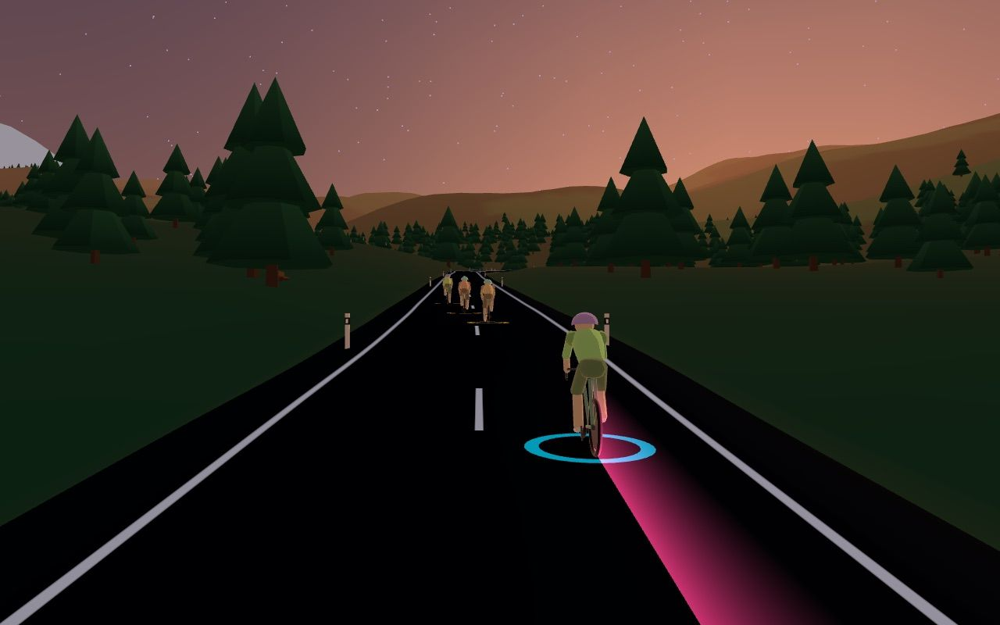
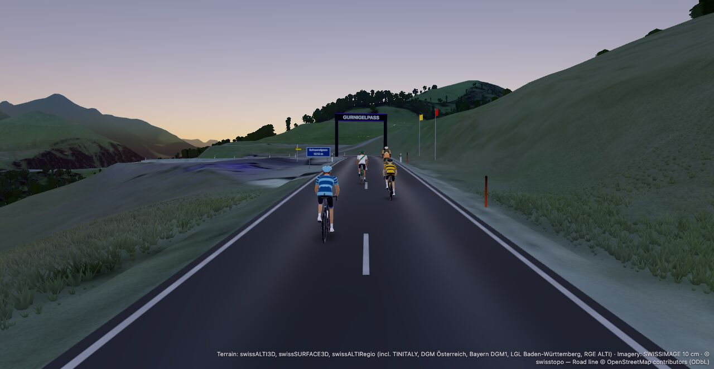
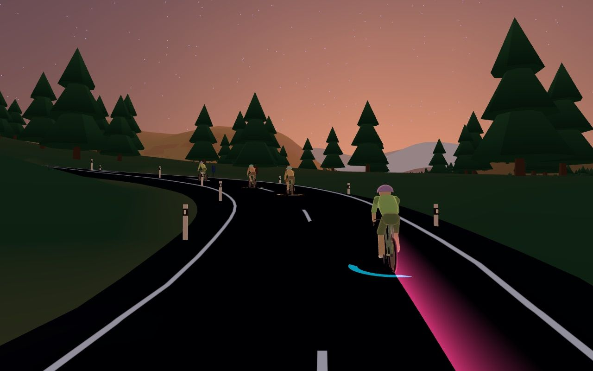
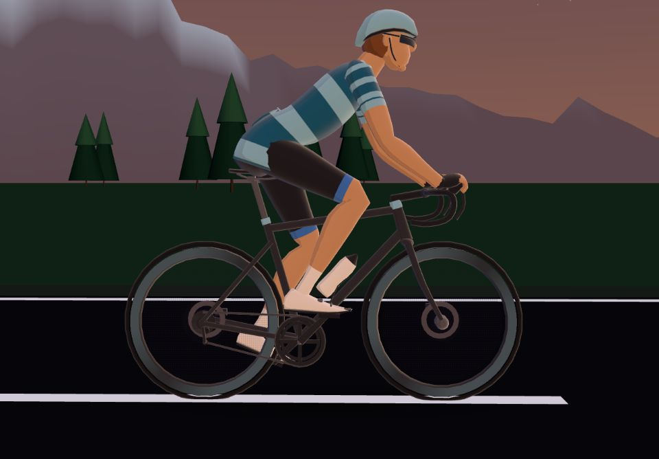
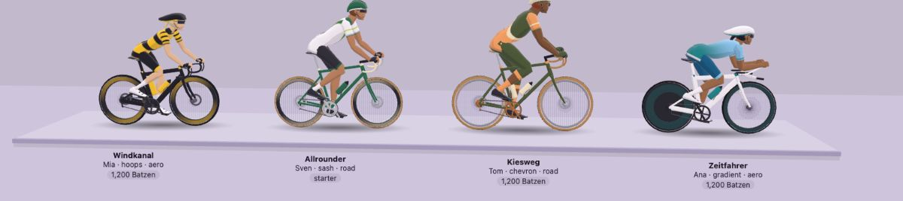

Jan doubted the open world, and he was right: every ride builds its own world from its own GPX, so there is no shared map for strangers to fill. What riders can share is the road itself. These screens show three parts. The same road is the same world, whichever route reaches it. Riders meet across time on climbs, not live. Riders from other crews meet live only at open rides, at a set time on a famous road. The rest of the page covers racing, the shop, the roadside and motion. Each section marks where it needs canon to change.
Same road, same worldThe world is keyed by the place, not by the file. In the place lab, a loop and its climb as its own file agree on 7,086 of 7,086 objects. Today they agree on 2 of about 3,000.
Meet across timeGhosts on climbs from any route: your best, a crewmate's line if they allow it, and on library climbs an opt-in board without names. Nothing is live.
Strangers only at open ridesAn open ride is a crew's planned session opened to everyone, on a library road at a set time. Strangers show as unnamed markers with no numbers, and each crew talks in its own voice channel.
Racing gets a draftIn races and free rides on a road. Never in a workout, the ERG bunch or the seven games.
Free ride without ERG exists alreadyThe free ride's grade mode is SIM (SPEC:167). The route ride (#3027) puts SIM on a real road.
Real parts, invented makers188 items across 36 families from 12 Swiss makers, priced in Batzen. No real brand anywhere.
Objects without bugsOne set of 15 placement checks runs in the world builder and in CI. Today's generator fails seven of them.
Motion with rulesFive easings, seven durations, a moments queue and a reduced-motion version of every moment.
Canon amendments · one optional reversal
Shared roads
Two new ADRs are proposed: the world is keyed by place, never by the route, and a climb belongs to the map, never to a route. Together they re-scope #3137, #3139 and #3033. They also amend the planned texts of ADR-0063, 0066, 0068, 0070, 0074 and 0078 before those ADRs are written. WATTROOM.md:62 gets a dated note: a climb time bracketed by Category is a rank currency, and flats are never ranked. The program's own markers at :13, :29 and :31 already cover roads and maps. A reversal of :61 ("No public leaderboards") happens only if Jan accepts the road board.
Used in: Shared roads, Ride modes, Motion (the KOM strip).
Canon reversal
Open rides
Riders from other crews meet live only on open rides, where they are unnamed and carry no numbers. This adds dated markers to WATTROOM.md:31, :54, :59, :61, :69, :70 and :72. ADR-0076 is retitled from "the open road" to open rides. ADR-0081 is withdrawn: the house crew hosts rides, but strangers never gather in it. It amends ADR-0006, 0010, 0012, 0021, 0024, 0036, 0039, 0058 and 0059.
Used in: Events, Race HUD, Rider card.
Canon reversal
The wind is shared
Drafting applies in races and in free rides on a road. It changes WATTROOM.md:30 (no drafting physics). It rewrites the planned ADR-0065 and ADR-0067 texts before they are written, and replaces the public line "No drafting. No power-ups. Just watts." This is ADR-0077 (proposed).
Used in: Events (race lobby), Race HUD.
No reversal
Everything else
The mode picker, the objects, the motion spec and the shop sit inside M11–M18. The shop amends ADR-0069.
On numbering: the place slice and the segments slice both drafted their ADR as 0082. Whichever merges first takes the number, and the road board takes the next free one.
Watt magenta marks your own live numbers. It is the only thing that glows.
Neon violet is chrome: borders, selection, buttons. It never glows.
Ghosts are see-through figures in the rider's own kit. They are recorded, not live, so they are neither watt nor neon, and they never glow.
Zones Z1–Z7, used for training zones and nothing else.
Canon reversalThe hatched stamp marks a screen that needs a locked line to change. A filled diamond in the index means the same. A half-filled one means amendments, with one optional reversal.
Animations run in a loop. Your system setting for reduced motion is respected.
Shared roads · proposed ADR-0082 · place lab, 27 September 2026 · re-scopes #3137, #3139 and #3033
Same road, same world, and meeting across time
Every ride builds its own world from its own GPX, so there is no Watopia to fill. What riders can share is the road. If the world is keyed by place instead of by route, the Gurnigel looks the same whichever file reaches it. If a climb is keyed by the map instead of by a route, everyone who rides it gets one set of lines to race.
So riders meet across time: your own best, your crew's lines if they allow it, and on library climbs an opt-in board without names. Nothing on this map is live, no stranger appears on it, and it works when you ride alone on a Wednesday. Riders from other crews meet live in one place only: the open rides in the next section.
Proposed ADR-0082: the world is keyed by place, and a climb belongs to the mapAmends the planned ADR-0063, 0066, 0068, 0070, 0074 and 0078 · a dated note on WATTROOM.md:62Only if the road board ships · WATTROOM.md:61Serves the decision: which shared layer, A to D
Your roads
Thursday 1 October3 of your roads · 25 library climbs
Your roadLibrary climb, public, no owner48:31Your best, from any route3Crew linesOpt-in road boardNext open rideNo live riders on this map. Climbs are drawn as symbols at their real summits; geography is approximate.
Live, only at a set time
Open rides on library roads
No live rider appears on this map. Riders from other crews meet only inside an open ride.
Thu 19:00Grimselpass group ride · Aare Wheelers
Thu 19:15Klausenpass Tuesday Bunch rides it from its lounge
Fri 12:10Gotthard, the Tremola group ride · Leventina Riders
One world · the hairpin below the Gurnigelpass, seen from above
Today: a world for each file

A · the whole loop

B · the climb as its own file
2 of about 3,000 objects stand in the same place. The ground is up to 42 m apart 200 m off the road, and 14.5 % of pixels differ. The pass is called Riedtpass in A and Pedalpass in B.
Keyed by place
A · the whole loop

B · the climb as its own file
7,086 of 7,086 objects agree within 1 cm, and the ground is 0.00 m apart at every distance. Streamed around one camera, 0.00 % of pixels differ. The names come from OSM: Gurnigelpass, Gurnigelbad, Rüti bei Riggisberg. C, the climb ridden down, gives the same picture.
From the place lab, 27 September 2026, on the maintainer's reference loop with cached swisstopo and OSM data. Nothing was fetched and nothing entered the repository. The lab's residuals are 0.77 m at 1 km when a whole route is built rather than streamed, 0.48 m inside a privacy zone, and 0.71 m at one junction.
In the ride: ghosts on the Gurnigel
This is a free ride on the Gurnigel climb from Tuesday Bunch's lounge. Mia, Kim and Sara ride the same road in the same voice channel, so they are live: solid figures with names. Your best from 12 August and Tom's line from 29 September are ghosts: see-through, unnamed and never glowing. Tom's line also draws a faint trace on the road. Only you see your ghosts and your gap, and nothing about them goes over the wire.
The gap is yours minus the ghost's time at the same metre. It updates once a second, in words, with no red or green.
RidePowerClimbMap
246W3.3 W/kg3 s power
Ghost · your best3 s behind12 Aug, ridden on the Gurnigel loop
Cadence86
Heart rate152
To the top10.4 km
Scroll sideways to see the whole screen.
Moment
Live rider Solid figure with a name tag. Only riders you share a voice channel with.Ghost See-through, in the rider's own kit. No name tag, no zone ring, no shadow, no glow. One instanced draw for all of them.Crew line A crewmate's ghost also leaves a faint trace on the road, in their kit colour.Skyline Each ghost is a hollow tick; your own dot is the only watt.
The picture stays at one bend from the realism lab (tier 3: swissALTI3D, SWISSIMAGE, the canopy model and a scattering sky). The ghosts, the panels and the Skyline change with the moment. Ghosts appear at the foot of a climb and leave at the top. They never shelter anyone and never appear in a session, a bunch ride, a race, a game, an ERG workout or on a tow. A right-click or long-press on a ghost offers "Hide ghosts on this climb"; the climb page has the same switch.
Who sees what, on shared roads
About you
Your crew
Anyone else who rides the same climb
A rider from another crew at an open ride
The roads you ride
A crew road, and the road of a crew session. Never your own files
Never. An effort keeps the climb, never the route
Never. Open rides use library roads only
That you rode a climb
Only if you switched lines on for this crew: your name and the date
Only if you opted into the road board, and then without a name
Never
Your time on it
As a ghost to race, with the gap in words. The climb page lists names and dates, never in order
On the opt-in board: time, Category and week. No name, crew or pseudonym
Never
Watts, HR, weight, W/kg
Live, only inside a shared voice channel, as today. Never on a line
Never
Never
Where you are right now
Inside a shared voice channel, as today
Never. There are no live riders on a road outside an open ride
An unnamed marker in a plain kit, with an id for this ride only
Your name
Yes
Never
Only your people: crewmates and friends on the same ride
An effort within 1 km of a privacy zone, or on a Strava-origin route
Never. It stays yours
Never
Never
The world of your road
The real place between the km-0 anchors (proposed; Jan decides this with ADR-0078)
Never your road. A library climb is one world for everyone
The library road only
Each row is checked when the data is read, not when it is written, so a privacy zone added today hides old lines at once. Deleting a ride deletes its efforts and lines. Climb names and efforts never reach MCP, feedback or any AI context.
A climb belongs to the map. The segment is a stretch of real road with two stretches, the whole climb and its top half. Creating it reads the map and the summit, never a route's coordinates. Over a matched span the served road comes from the segment, so the same watts give the same time whichever file you rode. The stored route is untouched.
The two research slices key a climb differently. The place lab keys it by road stroke and metres, and kept 535 of 535 keys when every one of 658 multi-node OSM ways was split. The segments design keys it by foot node, summit node and way ids, with a re-resolve job after each weekly geo pack. OSM gives a split way's id to one half only, so we recommend stroke keys and keeping the re-resolve job for moved junctions.
The ride follows the matched road. A track re-recorded with 3 m of GPS error ran 23 % of its samples off the drawn asphalt. Snapping point by point added 118 m to 14 km. Riding the stroke between the matched ends is off by 0.13 m on average and 0.35 % in length. The stored track still never changes (ADR-0070).
A line is about 1 byte per 10 m: the time at every 10 m, from the server's own replay of your watts, never from the metres the client sent. That is about 0.5 KB for 5 km. Lines are kept 90 days, plus your all-time best on each stretch. One read happens when the ride starts, and the hub does nothing.
What place-keying costs: the road network and the heights must exist before any key can be computed, so M12 writes the generator key-agnostic. Builds take 1.8 to 2.1 times as long. A descent meets the same objects 3.4 times as often per minute, and a descent never sets a time.
Also open for Jan
Does your crew see the real place? A place-keyed world is the real place, even in the stylised look: its relief, its OSM names and its road layout. Recommended: yes, between the km-0 anchors, with privacy zones generated from the zone's own secret. This is the same question as ADR-0078, so decide them together.
The road board: none beyond the crew; opt-in and unnamed on library climbs only; or opt-in with names. Recommended: opt-in, unnamed, library only, top 10 per Category over 90 days. Names wait until block and report have run for a season.
How a rider shares lines with the crew: recommended is one switch per crew, off by default, with a "Keep it private" undo per climb on the closing card. The alternative, a question on every closing card, fails the 95 % rule.

The realism lab's real ground (tier 3 here) already agrees between files: 19,108 of 19,108 canopy crowns, and the ground within 0.45 m. Its furniture, names and road burn still follow the route. The place-keyed look pack bakes crowns everywhere and burns the whole network in, never one route.
Decision for Jan
Which shared layer?
A, B and C build on each other; D puts an always-on road on top of C. We recommend C, built in order: B lands with M12 and M14, and open rides come once the M13 bunch engine and the library exist.
A
Your crew and your own ghosts
Your best on each climb, from any route. No crew lines, no board and no strangers, ever.
Safest, but a solo Wednesday has only yesterday's you to race.
B
Shared roads
The same road is the same world on every route. Ghosts on climbs: your best, crew lines by consent, and an opt-in board without names on library climbs.
No live strangers and no moderation. Needs map data first.
CRecommended
B, plus open rides on famous roads
Riders from other crews meet live only at an open ride: a crew's planned session opened to everyone, on a library road at a set time. They are unnamed markers with no numbers, and each crew talks in its own voice channel.
Costs nothing extra in the world, because a library road is already one world for every crew.
D
An always-on open road
Strangers appear whenever you ride a library road.
Parked. It reopens only if one library road sees at least 60 solo rides a week for 4 weeks, its open rides already fill, and a recurring open ride there has been tried first.
An always-on road would be empty. At 100 riders online, another solo rider is on your current 5 km of home road 0.5–12 % of the time. On a 12-climb library that rises to about 49 %. Zwift has roughly 500 to 2,000 riders on every 5 km. A library road feels populated only with about 3 others per stretch, which happens under a col of the month from about 300 online.
Time concentrates people. That is how Zwift fills its roads: events start every 5–10 minutes, and most of its worlds stay closed. Across time the numbers work at our size: at about 1,000 weekly riders, a library climb collects 350 to 1,460 lines every 90 days.
C drops to B with nothing lost. If Jan prefers no live strangers at all, segments and ghosts stand without open rides. D stays parked, because a meeting on a home road would also say where a rider lives (ADR-0063).
Open rides · ADR-0076, retitled · #3172 Wheelrace · #3168 race spec · #3169 race FTP and weight freeze
Live across crews, only where a time and a place meet
Riders from other crews meet live in one place only: an open ride. That is a crew's planned session opened to everyone, on a road from the famous-climb library, at a set time. The crew stays the social unit. Each crew rides from its own voice channel and talks there, and a rider with no channel rides from /ride. To a rider from another crew you are an unnamed marker in a plain kit, with an id that lasts one ride. Your people see your name, and your numbers stay in your own voice channel.
The first format is the group ride: everyone holds the plan's %FTP and moves at the bunch's speed, so it tells a stranger nothing about how strong you are. The lobby below shows what comes after the race core in M16: a Wheelrace as an open-ride format, where each rider sees only their own placing, once.
Canon reversal · open rides · WATTROOM.md:31, :54, :59, :61, :69, :70, :72Canon reversal · drafting in races (ADR-0077)ADR-0081 withdrawn: the house crew hosts rides but never gathers strangersServes the decision: keep part 3, the open rides, or drop it
This week
Monday 28 September
18:30
Open ride
Grosse Scheidegg from Grindelwald
Group ride · Tempo 45 · hosted by WattRoom Hosts
31 rode · 7 crews
Tuesday 29 September
19:00
Crew session
Tuesday Bunch · Gurnigel loop, stage 3 of 8
Crew road · only your crew sees this entry
7 rode
Wednesday 30 September
all day
Climb of the month
October: Passo dello Stelvio from Prato
Ride it any day, whole or its top half · your line joins the climb's ghosts · not live
opens
Thursday 1 October · today
19:00
Open ride · riding now
Grimselpass from Innertkirchen
Group ride · Sweet spot 2×20 · hosted by Aare Wheelers
open rides
236 crews · 4 alone
19:15
Open ride · riding now
Klausenpass from Linthal
Group ride · Tempo 60 · hosted by WattRoom Hosts · Tuesday Bunch rides it from its lounge
open rides
175 crews · 2 alone
19:30
Open ride · Wheelrace · pen open
Seeland flats
Pens by Category with head starts · hosted by Aare Wheelers
open ridesdraftingafter M16Kim, Tom, Mia going
43in the pens
Friday 2 October
12:10
Open ride
Lunch on the Tremola, Gotthard from Airolo
Group ride · Endurance 60 · hosted by Leventina Riders
open rides
pen at 12:00
Saturday 3 October
09:30
Open ride
Alpe d'Huez, the 21 hairpins
Group ride · Tempo 60 · hosted by Club des Lacets
open rides
pen at 09:20
18:00
Crew game night
Floor is Lava, then Watt Golf
In Tuesday Bunch's lounge · only your crew · no road needed
5 going
Sunday 4 October
08:30
Crew race
Draft Train · Tuesday Bunch against the Devil
A crew team time trial · pulls counted, never ranked
drafting
6 going
Counts appear only once a pen opens. Strangers do not RSVP, so nobody's interest is stored. A card is built from the crew's name and mark, the library road, the format, a curated workout and the time, with no free text anywhere.
The pen · open ride · hosted by Aare Wheelers · Thursday 19:30
Wheelrace · Seeland flats
24.0 km · 180 m climbing · 2 village-sign sprints · library road, no owner · after M16
Pen D leaves in04:52Your pen leaves in 09:05
D leaves first
19:30:00 · head start 10:04 par 2.2 W/kg · 9 riders · 4 crews
+6
C your pen
19:34:13 · head start 5:51 par 2.85 W/kg · 14 riders · 6 crews
YOKISA+9
Set by your 90-day power curve. You cannot pick a lower pen.
B
19:37:37 · head start 2:27 par 3.6 W/kg · 12 riders · 5 crews
TOMI+9
A scratch
19:40:04 · no head start par 4.3 W/kg · 8 riders · 3 crews
+6
Initials are your people: crewmates and friends. Every other rider is a plain dot in a coarse kit, 12 colourways on 6 bike shapes, never their look.
Trainer ready · Kickr CoreHeart rateRace FTP 262 W, frozen at the flagRace weight unchanged for 40 daysDraft on · felt on your trainer in SIMNo power-ups · no steering
Riders from other crews see an unnamed rider in a plain kit: where you are and how fast you go. Kim, Sara, Tom and Mia see your name. Your numbers stay in Tuesday Bunch's lounge. In a Wheelrace, your head start and your speed on a climb say roughly how strong you are.
Your own placing on your closing card, once. Nobody else sees it and nothing is stored (ADR-0067). Nobody watches an open ride they do not ride.
The group ride comes first. Everyone holds the plan's %FTP on the ERG path and moves at the bunch's speed, on the same engine a session drives (ADR-0065). A late joiner lands at the bunch until the plan's last 10 minutes. Wheelrace and Chase the Devil follow the race core in M16. Mass-start Category races stay parked until open rides draw a median of 10 riders from 3 crews for 8 weeks and a design for enforcing Categories exists.
One room per open ride in the hub, beside the voice channels, and the two never message each other. The room sends one frame a second to everyone (n in, 1 out), with no names and no numbers. It is capped at 100 riders, which bounds the frame at about 2 KB/s per viewer. To your own voice channel, riding an open ride is a free ride, and exactly one ride is saved.
Head starts come from the pace model (#3048) at each Category's par on this road: D 31.5 km/h, C 34.7, B 37.8, A 40.4 on the flat. Over 24 km that is 10:04, 5:51 and 2:27 of head start. On a steep climb the same rule would give D an hour, so the Wheelrace needs a flat or rolling road.
Race weight and FTP freeze at the flag. A rider whose weight changed in the last 14 days rides unranked, and only they see why.
Open for Jan
Keep part 3 at all? Recommended: open rides only, the group ride first, after the M13 bunch engine and the library (#3149). Dropping it leaves crews, crew lines and ghosts, and nothing in Shared roads depends on it.
Who may open a ride? Recommended: any crew's owner or admin, at most 3 open rides in any 7 days. Opening a ride shows the crew's name and mark to every signed-in rider, so the switch says so.
Voice across crews: none, plus six closed-set leader calls from the host (recommended); or also a listen-only leader radio. The radio would be the one place a stranger's voice reaches a rider, so the terms' under-16 line has to be read again first.
The climb of the month: the parity research wants 50/75/100 % height scaling like Zwift's Climb Portal. The ride-modes research says a scaled climb is not the real road, and its times compare with nothing, which now matters because they are ghost lines. The mockup shows it unscaled.
Ride modes · settles the vocabulary in ADR-0062 (#3020) · #3027 · #3053 · #3105 · #3193
Five ways in, ten ways to ride
Jan asked for a free ride without ERG. It already exists: the free ride's grade mode is SIM (SPEC:167), and the route ride (#3027) puts SIM on a real road. Zwift's Watt Lock, due in October 2026, is the same as WattRoom's watts mode, which shipped first. What is missing is a way to find ten kinds of ride without ten buttons.
Five modes carry all of them: Free ride, Workout, Bunch ride, Race and Game. A road is something any ride can carry. Solo or together follows from where you start, so the app never has to ask. Pick one of the ten below to see where it lives.
No canon changeMust land before #3027 adds FreeMode "route"Serves: five modes over the round-3 vocabulary
/ride, alone
Ride
Free rideYou drive the trainer. Hold a grade, or hold your watts.
WorkoutThe plan drives it. Last: Sweet spot 3×12.
RoadSustenpass from Wassenyour last road
Whole roadFrom km…One climbRepeat
Ghosts: your best · Tom's lineFeel: road 5.8 %, you feel 2.9 %
KIRide in Tuesday Bunch's lounge, muted. Your crew can drop in. Kim is there.
A game alone: Watt Golf · Floor is Lava · Backyard Ramp
One gear (Zwift Cog)? The Free ride card reads "One gear: the road sets your watts".
In a voice channel
Tuesday Bunch · Lounge
Next plan
Thursday 19:00 · Gurnigel loop, stage 4 of 8
km 29.3 to 41.0 · 2 climbs · about 48 min at crew pace
A free ride in a voice channel starts on the crew's home road, so friends land on the same road. "Ride with Lea" on a tile moves you once to her metre.
Starting a session, as coach
Pick what we ride
WorkoutsRoadsGames
Klausenpass from LinthalHC
23.3 km · 1,298 m · 5.6 %
Race it arrives with M16.
With a workoutTerrain Match on
The hard blocks land on the climbs. Everyone rides their own %FTP; the bunch rides the prescribed pace.
Where is
Pick a way to ride and the screens above light up where it starts.
Way to ride
Where you start it
Trainer
Who you see
What it pays
Free ride
/ride or a voice channel · Free ride, no road
SIM at your grade (−5 to +15 %), or ERG at your watts
Your channel's tiles
XP = kJ + streak · Batzen at your kJ-at-FTP rate
Route ride
Free ride + a road
SIM on the real grade, felt at 50 %; descents halved. One gear: watts from the grade
Your channel's free riders on the same road; ghosts on each climb
Same · your own climb times
Bunch ride
Session · Roads · Ride it together
SIM; the hub holds one bunch at the live mean %FTP, each rider capped at 150 %
The bunch
Same · never ranked
ERG workout
/ride · Workout, road optional
ERG targets; Terrain Match on a road
Your dot, moved by your watts
Same + execution bonus
Group workout
Session · Workouts, road optional
ERG at each rider's %FTP
The session's bunch, the roadside
Same + execution bonus, medals
Race
Session · Roads · Race it, or an open ride's race format (after M16)
SIM; W/kg positions; the draft lowers drag (proposed)
Racers, gap board, the roadside
Results by Category on the closing card, never stored
Game
Session · Games, or three alone from /ride
ERG from the mode
The session
Same · medals need 3 riders
Time trial
Free ride over any climb you rode before, from any route
As a route ride
Your best on each climb as a ghost; splits at 25, 50 and 75 %
Same · the server's replay times it (ADR-0074)
Climb repeats
Free ride · One climb · Repeat
SIM only; the descent is felt at 0 %
You or the bunch · "Rep 7 · 3,410 of 8,849 m"
Same · gain counts at any difficulty
Recon
"Ride it first" on a planned session
As a route ride, from the plan's start km
Only you
Same
Pay is the same in every mode. 1 kJ = 1 XP plus the streak bonus. Batzen come at your kJ-at-FTP rate, capped at 72 an hour and 180 a day. No mode pays more, and coasting pays nothing, so no mode can be farmed.
One felt-grade rule: felt = difficulty × grade, descents halved, clamped to −5…+10 %, slewed at 1 %/s. Difficulty is 50 % by default and 100 % under Advanced. It never changes speed, time, rank, XP or Batzen. That is Zwift's rule, so Zwift riders feel at home.
Corners before any of this ships (#3048): the pace model has no corner speed today, so a −8 % descent takes a 10 m hairpin at 64 km/h and a 73° lean. The fix is v ≤ √(0.6 g·r), which is 27.6 km/h there, with look-ahead braking at 4 m/s². No brake button.
ride_mode collapses to free, workout, bunch, race and game, with a timeable flag written at save. #3053's CHECK does not grow to eight values.
Open for Jan
Zwift Cog riders: widen the existing singleSpeed setting so a watts target replaces the slope wherever a slope would go. App-side virtual shifting walks into Zwift's US11986700, active until 2042, from a public AGPL repo. That is a legal and risk call.
Does a one-gear rider's ERG-by-road ride set their own climb times? Recommended yes: the bias they press is their choice, as the gear is for a cassette rider.
Race HUD · #3032 race core · #3174 RACE page · #3048 pace model · #3025 drag on both Kickrs
A race you can sit in, attack and chase
Without a draft, a W/kg mass start is a set of parallel time trials: the highest W/kg wins from the flag, and where you ride changes nothing. With a draft, sitting in, attacking, bridging and lead-outs exist. The hub owns every racer's position, so every screen agrees and nobody can claim shelter they did not have. On an open ride, riders from other crews race as unnamed markers, and your people keep their names. Lanes are automatic, so no one needs a steering device. The trainer feels the shelter through the drag coefficient FTMS already carries, in SIM only.
Pick a moment below the screen. The picture stays in the wheel; the panels change.
Canon reversal · WATTROOM.md:30, no drafting physicsRewrites the planned ADR-0065 and ADR-0067 textsPublic copy: "No drafting. No power-ups. Just watts."

Tom
km 18.4 of 24.00.4 %5.6 km to the line
Open ride · Wheelrace · pen CSIM · you feel 0.2 %31:52 · lap 1 of 1
Team-car radioSitting in. The break is 18 s up the road, holding.
Nightcall · queued by Kim · 2 next
Chalked at the Büren village sign
+0:18 · 2 ridersbunch 6 · +0:42 · 1
Team-car radioAttack · Tom · +1.4 W/kg over the bunch
RidePowerRaceMap←/→ pages · PgUp/PgDn bias
214W2.9 W/kg3 s power
IN THE WHEEL−34 %
Tom's wheel · trainer drag 0.34, down from 0.51 · SIM
Matches · only you see this
64 % of W′ left · refilling
Break +0:18 · holdingBehind you −0:06
Groups · km 18.4
Gap to the break: 45 m · 38 s at this pace
Scroll sideways to see the whole screen.
Moment
The shelter curve (defaults, tuned in alpha): 35 % less drag up to a 1.0 m wheel gap, fading to 0 at 6 m. Second in a line 35 %, third 45 %, fourth and deeper 50 %, and never more than 50 %. The next lane gets half. The rider on the front gets 3 % from a wheel sitting behind. Sources: Blocken 2018 and 2025, Spoelstra 2021.
Why a cap: with it, a five-rider chase at 3.0 W/kg already needs a solo attacker at 4.4 W/kg to hold the gap. Without it, breaks never survive. Zwift learned this with Pack Dynamics 4.
Never brake, never clamp. Ten more watts always move you forward. Zwift's 20–40 W "power windows" and sticky draft are the bugs this rule exists to prevent, and property tests break the code on purpose to prove it.
The trainer feels it in SIM only: drag = 0.51 × (1 − shelter), written with the grade in the same FTMS command, only on a change of 5 points and at most every 2 s. ERG never gets it. If a trainer ignores it, a grade offset stands in: 35 % shelter at 40 km/h is about −1.0 %.
No draft in the ERG bunch, road workouts, the seven %FTP games, the Col, or behind the Devil and your ghost. A bot a spectator can steer never gives shelter, or a spectator would move your resistance.
What the draft makes possible: a Kermesse circuit race with primes ("Points Race" is taken), the Draft Train as a crew team time trial, Miss-and-Out on a loop, and a Wheelrace with a real chase.
Open for Jan
Reverse "no drafting physics"? (a) no draft, races stay time trials; (b) draft in races and free rides on a road, felt on the trainer, never in ERG, games or the bunch; (c) crosswind echelons. We recommend (b), staged: the hooks in M11 while #3048 and #3025 are open, free rides in M13 to tune the numbers, races in M16. (c) goes to the backlog.
In a crew race, who can you draft? Recommended: anyone, with results by Category. A crew rarely has two riders in one Category; holding an A rider's wheel on the flat takes 2.97 W/kg, or 2.25 W/kg fourth in a line.
The research disagrees on free rides: the parity slice wants the draft in races only; the drafting slice wants free rides on a road too, as the place to tune it. The motion slice adds that a draft cue must never appear where no draft model exists.
Live numbers snap to each sample; only the shelter bar settles, by transform, over 500 ms. The bar is watt at low emphasis with no glow, because it is your live data. Zwift's thin draft bar was called too subtle, so this one carries a word and a number.
Rider card · #3116 a cheer for one rider · #2739 RiderCard · ADR-0024 unchanged · the block list from ADR-0012 · hiding a rider met on an open ride
Tap a rider
Tapping a rider in the world opens a card. For someone in your voice channel, it says who they are and what they wear, and lets you cheer. A rider from another crew on an open ride has no card, because a marker never links to a page. Tapping one opens two big buttons, Hide and Report. A ghost is not a rider: its menu offers only "Hide ghosts on this climb". Tapping a rider never moves your camera.
Canon reversal · open rides (the stranger's two buttons, ADR-0076)The crewmate card changes no canon
A thumbs-up over her head and her tail light blinks at 2 Hz for 10 s. Then 20 s until you can cheer her again. Messages open after the ride.
Grimselpass open ride · 12 m ahead
A rider in a fir-green kit
One of 12 colourways on one of 6 bike shapes, never their own look. No name, no crew, no numbers and no page. The id lasts this ride only.
The figure's tap area is padded to 44 px, so you can hit it mid-ride. A right-click or long-press offers the same two buttons. There is no bell and no wave across crews: nothing a stranger sends reaches you, so there is nothing to moderate.
What Mia gets
Her row in the peloton list pulses once, with a soft cue at most every 10 s. Her closing card says "Cheered 7× by Kim, Tom and you".
A cheer is never XP and never Batzen. Zwift's Ride On doubles drops for 15 s; that turns applause into currency, which ADR-0069 rules out.
Live numbers on the card follow ADR-0059: you see Mia's watts only because you share the voice channel. On an open ride, a rider from another crew has no card and shows no numbers. Her numbers are ink, not watt: only your own numbers glow.
What she wears links to how to get it. Bought items show the price; earned items say the rule. The item travels; her progress toward it stays private (ADR-0027).
Race numbers are assigned from the start list, never chosen, so there is nothing to moderate. The plate appears after the first race finish.
Open for Jan
Names on an open ride: never, where only your people see your name (recommended); opt-in per ride; or named by default. A name shown to strangers makes display names something to moderate and lets one rider follow another from ride to ride. Once shown, it cannot be taken back.
The camera is a tripod on a rail. It follows, it cuts, and it never shakes, bobs or orbits a rider who is pedalling. The excitement goes on the models and the chips: flags, crowds, a strip, a pop. Every moment has its sound on the same frame and a reduced-motion stamp that keeps the sound. Only one celebration plays at a time.
No canon changeNew ux.md section "Motion" and a SPEC motion tableServes: reduced motion keeps a steady world, not only the Skyline

GOGO
road linejukeboxbike computerpelotonSkyline
Chase camera · the ride has started
Count-in: a reveal, not a flyover
0.0 sThe camera starts 200 m back and 100 m up, looking at the first climb's summit. It descends to the chase pose, capped at 60 m/s and 20°/s.
7.0 sThe camera stops. The digit on the start arch pops each second, 220 ms. The screen digit is the one to trust.
10.0 sGO flips in 240 ms. The "go" cue plays on the flip's first frame.
+60 msThe five slots dock in from their own edges, one after another, 240 ms each.
countdown tick ×3go
Reduced motion: one still frame of the arch under the digit, then the ride. Flying the literal "first climb to the arch" of #3087 would move the camera kilometres in 7 s, the strongest trigger for motion sickness.

GURNIGELPASS · CLASS I48:17 · your best on this climb, from any routePR −0:14
Realism lab, tier 3. The blue sign still shows a name the route invented; place keys give it the OSM one
Over the top
0.0 sApproaching the summit. The chase camera follows; nothing else moves.
2.0 sYou cross the top. The strip drops from the top, 280 ms. The "summit" cue plays and the crowd swells 6 dB over 1 s. Your ghost leaves here: it rides only from the foot to the top.
2.2 sThe PR chip pops, 320 ms, from 60 % size. It counts efforts from every route over this climb.
2.0–4.2 sConfetti leaves the spectators' hands in flat colours, never watt. Only for the finish, HC and class I summits, and race wins.
4.4 sThe strip leaves, 200 ms.
summitcrowd +6 dB
Reduced motion: the strip appears in place for 3 s, no confetti. Both sounds play.


Wheelrace · Seeland flats · 1 Oct 2026
2ndof 14 in C · only you see this
Finish: the photo develops
0.0 sYou cross the line. The chase camera keeps following for 1.5 s while legs still turn.
1.5 sA fog-dip cut: 120 ms to fog colour, cut, 180 ms back. The "shutter" cue plays at the cut.
1.6 sThe photo develops: a 40 % veil fades over 900 ms and the frame settles from 102 % to 100 %. Then the render loop stops.
2.7 sYour placing arrives, once, and pops as the fanfare lands. There is no podium: on an open ride nobody sees another rider's placing, and nothing is stored.
shutterfanfare
Reduced motion: the still photo and your placing at once, sounds kept. In a crew race, spectators in the voice channel get a 6 s orbit; the rider who just emptied themselves gets a still picture.
Wheelrace · Seeland flats · 2nd of 14 in C
Distance24.0
Time41:22
Energy546
Avg power220
Büren sprint · 3rd in CLyss sprint · 1st in CSat in 41 % · pulled for 6 minCheered 7× by Kim, Tom and Sara
+42 Batzen
The closing card
0.0 sThe card rises 1.5em, 400 ms.
0.4 sThe road draws on in 1.2 s with your zone trace behind the pen.
0.6 sThe numbers roll once in 700 ms. Screen readers get the final values from the start.
1.6 sThe moments come in, 60 ms apart.
2.2 s+42 Batzen rolls and the wish bar grows from 71 % to 84 % in 900 ms. No sound: nothing here may feel like a slot machine.
no cue
Reduced motion: the finished card at once.
Easings
--ease-arrive
Things entering: strips, cards, slots
--ease-leave
Things leaving
--ease-move
Moves on screen: reorders, lanes, the road drawing on
--ease-live
A live bar settling
--ease-pop
A sampled spring with 8 % overshoot. Models and chips only, never the camera
Durations
--dur-press
90 ms
--dur-quick
160 ms
--dur-base
240 ms
--dur-reveal
400 ms
--dur-live
500 ms
--dur-stage
700 ms
--dur-draw
1,200 ms · staggers 60 and 400 ms · strips hold 2.4 s
Rules
Live numbers snap. Only results roll, once.
One celebration at a time: finish, then race result, then summit, then PR. A lower one waits.
Field of view rises at most 4° above 50°, over a 2 s half-life. The port does 10° in 0.5 s today.
Flashes: at most one per 10 s over a quarter of a 10° field. Zone 6, zone 7, danger and watt never blink.
No infinite DOM animation while riding. The canvas is the only thing that always moves.
Cues land on the hit. cues.ts gains play(id, {inMs, pan}), scheduled on the audio clock. Sound may trail the picture by 40 ms and lead it by 20 ms at most, inside what people can detect (ITU-R BT.1359).
Svelte transitions run on the Web Animations API, so today's global reduced-motion CSS never reaches them. One $lib/motion wraps them, and the e2e test counts document.getAnimations() instead of CSS transitions.
Open for Jan
Reduced motion during a ride: the Skyline for the whole ride, as #3080 says, or the Skyline plus one big "Show the world, steady camera" button remembered per device? We recommend the button. Many people switch on reduced motion for battery or distraction and would silently lose the centrepiece.
Speed on descents: no speed lines and no big field-of-view kick on the rider's screen. Wind, tyre hum and the tuck posture carry the speed.
Along the road · #3076 props · #3077 set pieces · #3134 real places · #3181–#3185 · #3191 the bus
What lines the road, and why it is there
Real OpenStreetMap tags put most objects where they really stand: galleries, bridges, lifts, railways, fountains, chapels, dams, turbines. The generator only fills gaps; on the 48 km reference loop the real marks leave holes of up to 3.2 km. "Without bugs" has to be a property of the generator, because riders bring roads no test fixture has. The same 15 checks reject a bad placement while the world is built and fail CI on four fixtures.
No canon changeAdds SPEC "Living world" numbers and a placement harnessServes: more interesting objects, without bugs
The strip moves at about 50 px/s, like the roadside at 30 km/h through a narrow window.
Bugs the checks found in today's generator
Two flagpoles on one spot, in different colours, their flags z-fighting. Offsets were rounded to the 10 m road step.O5
A church's 29 m foundation 1.3 m from the asphalt. Clearance was tested on centre points only.O1
57 of 84 fences float on the long loop; hay bales by up to 1.27 m.O2
Barns hang 2.75 m in the air or sink 7.6 m into the uphill side.O2 · O3
305 of 1,216 road posts float on banked hairpins: they read the centreline height.O2
Props are fogged 10 to 16 points brighter than the ground they stand on at 1–3 km.O8
A 0.5 m near plane leaves 0.12 m of depth resolution at 1 km. It moves to 1.0 m.O6
121 s with nothing new beside the road on the long loop. The limit becomes 90 s.O9
The 15 checks: O1 clearance on the footprint · O2 float · O3 bury · O4 facing · O5 overlap · O6 depth separation · O7 sightline · O8 popping and fog · O9 rhythm · O10 movers · O11 the same world for the same place, on every screen and every route · O12 budget · O13 flashes and hue · O14 hours and seasons · O15 sound. A mutation suite breaks the code in each of the eight ways above and must see a check turn red.
Real hours and seasons. Cows are on the alp from 15 June to 30 September, lifts stop at 17:00, paragliders fly 10:00–17:00, bonfires burn on 1 August. The ride is always at blue hour or night (ADR-0072), so an always-on showcase would show daytime work in the dark.
Only the bus shares our road, in the opposite lane, at least 1 m from any rider. Tractors, trains and boats run on their own tracks. A bunch cannot brake.
Static props merge per 250 m tile. Firefox has multi-draw on 5.3 % of devices, so the planned BatchedMesh becomes hundreds of draw calls there. Movers ride a path texture on the session clock, so the whole crew sees the same train.
Open for Jan
The postbus: Swiss Post's three-tone horn is reported to be a registered sound mark, and the planned bus copies it. We recommend our own livery and a different two-tone horn.
Fireworks on 1 August and New Year's Eve: distant and small, at least 2 km away, one burst every 2 s at most, off under reduced motion. Or bonfires only.
Real marks: draw all of them, or thin to one per kind per 150 m per side? The reference loop has 63 information posts and 35 benches, four at one viewpoint. We recommend thinning, with real objects always winning over generated ones.
Shoes, socks, bibs, jerseys, helmets, glasses, tyres, frames and real components, deep enough to browse for an evening. Every item is a real kind of part with a real spec and era, from one of twelve invented Swiss makers. A real brand's licence can expire and take the item with it, and its logo cannot ship in an AGPL repository, so a self-hosted WattRoom would get a different shop.
The shop sells ideas: a shape, a pattern, an era. Widths, depths, lengths, counts and colours are free on anything you own. Nothing changes speed. Pick a slot, a maker, or a filter.
Amends ADR-0069: real parts, invented makers; price the idea, not the parameterNo reversalServes: a much deeper shop, for looks only
Try-on is free for everything. A purchase can be undone for 10 minutes while you have not ridden in it.
Show
Frame
Twelve makers
Each maker owns a discipline and an era. Pick one to see everything it makes. The names still need a trademark search in Swissreg, TMview and WIPO before launch; a web search is not clearance.

Locker
Saved looks
Vintage Sunday
Race day
Winter
Tuesday Bunch
Rain
Five looks, free. The crew kit switches on by itself in that crew's sessions, and never outside them, so an open ride cannot reveal which crew you ride with.
You own 31 of 188 items. Crew kits and your build, height and skin tone stay as in v2: free.
Earning, only you see this
Zweihundert frame · ride 200 times · 143 so far
Alpabzug flower crown · 3 rides by 31 October · 2 so far
Gruppetto bottle · 10 group sessions · 7 so far
Gipfelpunkte jersey · climb an HC climb in one ride
Nothing is ever unlocked by money, chance, a deadline you cannot meet next year, Category, placing, W/kg or level.
The Swiss calendar, back every year
Three rides inside a window earn its item, dated ("Alpabzug 2026"). Never sold. Missing one costs a year's wait, not the item.
Prices in Batzen:S 60M 150L 400XL 1,200XXL 2,400 Batzen are kJ at your FTP rate, about 40 a ride, capped at 72 an hour and 180 a day, with a capped opening grant.
120 items for sale cost 29,740 Batzen, about 4.8 years at three rides a week; frames are 58 % of that. The target that matters is one complete look per winter: 2,040–2,920 Batzen, 17 to 24 weeks.
Real rules as chips on free sliders: past 65 mm a rim reads "not legal in a mass-start race since 2026", under 400 mm a bar does too, and socks stop halfway to the knee. They inform and never block.
Bug-free by construction: every family declares its triangles and a far-away fallback. Accessories share a 600-triangle pool, because the studio's worst loadout already uses 13,828 of 14,000. Illegal combinations, such as a full frame bag with bottles, render disabled with a one-line reason.
Sounds only in your own ears: hub voices like Summer, Hornisse and Taschenuhr are synthesised on the cues fader, 0 KB, never sent to anyone.
Open for Jan
Real brands or invented makers? We recommend invented makers now, with a partner pack held open for later on strict terms: no money either way, a perpetual free licence for items people already own, assets outside the AGPL repository, no stats, no rotation.
Free parameters? Charging for 26 mm against 28 mm tyres is nickel-and-diming, the reason colours are already free.
The Polka jersey in the rider studio sits too close to the Tour's climber jersey. It becomes Gipfelpunkte, earned on an HC climb, and dots never sit on a white ground.